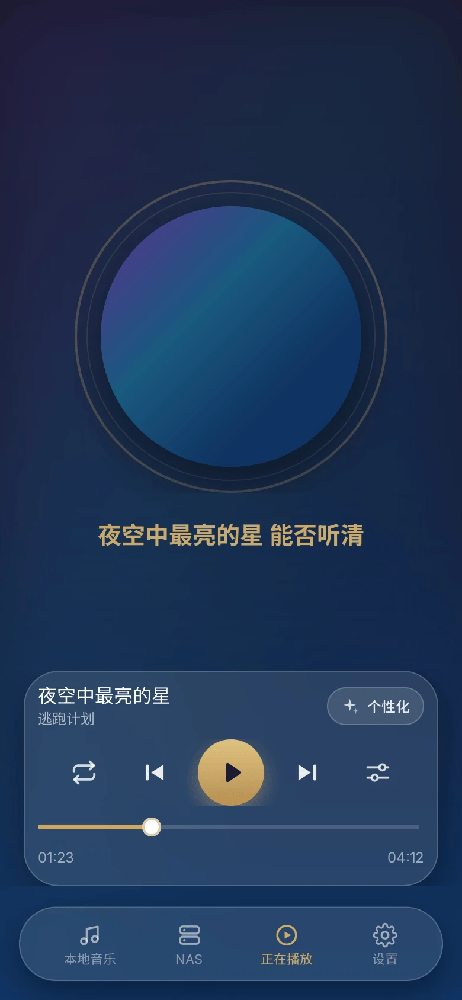

v—
手机端
随身聆听，单手操控。完整功能浓缩于掌心，通勤路上随时切歌。
让每一首歌，都以它本来的样子响起。手机、桌面、车机、电视、数播——六种形态，只为专注地聆听。

从格式兼容到歌词体验，从跨端同步到音质验证——每一处能力，都为「听得更好」而做。
FLAC、APE、DSD、WAV 等无损格式，本地直通声卡。
大模型生成歌词，逐字高亮，偏移按曲目记住。
手机、桌面、车机、电视、数播，一处设置处处延续。
喷泉、黑胶、星空环、音波，让音乐看得见。
整轨专辑按索引精确切分，曲目独立播放。
SMB / WebDAV 直连，异地也能翻遍整个收藏。
文件不上传、云端不留痕，断网照样完整播放。
bit-perfect 用 ALSA 实测，结论写成白皮书公开。
同一份设计语言，为不同屏幕量身打造。点击即可下载对应安装包。
随身聆听，单手操控。完整功能浓缩于掌心，通勤路上随时切歌。
横屏大视野，车机与平板同一构建。触控目标放大、布局分栏，驾驶或休闲都得心应手。
客厅里的音乐中心。遥控器方向键操作，超大焦点与字号，沙发上轻松选曲。
有电脑？可以让 AI 用 ADB 直装，不用 U 盘。
PC 上的完整播放器。键鼠操控、宽屏歌词与可视化，界面与移动端同一套玻璃语言；exe 安装包双击即装。
每个平台提供两条下载链路：国内下载（码云 Gitee 镜像，国内直连更稳）与 国际下载（GitHub Releases）。两个按钮给的是 64 位包（arm64-v8a，适配绝大多数机型），下面的「其它架构」里另列 32 位包（armeabi-v7a，仅供较早的纯 32 位设备），两者同版本、任选其一即可。多吉云入口与最新版本同步，64 位 / 32 位 均已上传，国内 / 国际 两条为备选。车机与平板为同一安装包，均有 64 位与 32 位两个包。Windows 桌面版是 exe 安装包，双击后解压到当前用户目录并创建桌面快捷方式，不需要管理员权限，也不会写入系统目录；卸载直接删掉安装目录即可。
不少电视默认不允许安装第三方应用。会电脑的话，最省事的是让 AI 用 ADB 直装；只用遥控器的话，按下面四步用 U 盘装。
在上方「电视端」卡片点「国内下载」拿到 APK，拷到 U 盘根目录（FAT32 格式兼容性最好）。
U 盘插到电视 USB 口，打开电视自带的「文件管理 / 媒体中心 / 电视卫士」，找到那个 APK。
首次会提示「未知来源」。选「允许」，或到系统设置里把「安装未知应用」打开。
确认安装，回到桌面就能看到「吾爱音乐」。遥控器方向键操作，确认键进入。
如果你手边有电脑，可以不碰 U 盘、也不在电视上用遥控器翻文件管理器。把下面这段需求直接丢给 WorkBuddy（能自己执行命令）或豆包这类助手，它会帮你把安装包下好、连上电视、推送安装；豆包不能执行命令时，把命令复制到终端逐条运行即可。
一句话就够：「帮我装吾爱音乐 TV 版到电视上：先下最新的 TV 安装包（优先 arm64，装不上再换 32 位），再用 adb 推过去。」
安装包有两个来源，国内优先码云（快）：
# 版本清单（含各渠道、各架构的下载地址与 sha256） https://music.52ta.top/version.json # 电视版 · arm64（大多数电视盒子 / 智能电视） https://gitee.com/jinghe-net/wuai-music/releases/download/latest/app-tv-release.apk # 电视版 · 32 位（老机顶盒，arm64 包装不上时用它） https://gitee.com/jinghe-net/wuai-music/releases/download/latest/app-tv-release-v7a.apk
下完可以对一下 sha256，与清单里 releases.tv.variants 的值一致就说明包完整。
电视上：设置 → 关于 → 版本号连点 7 次，出现「开发者选项」；进去打开 USB 调试，并打开 网络调试 / ADB over network（不同品牌叫法略有差异）。
再到 设置 → 网络 记下电视的 IP 地址，例如 192.168.1.23。电脑要和电视连同一个路由器。
电脑上执行（没装 adb 的话，让 AI 帮你下载 Android platform-tools 并解压）：
adb connect 192.168.1.23:5555
adb devices
# 第二行应列出 192.168.1.23:5555 device
首次连接电视会弹出「允许 USB 调试吗」，勾选一律允许再确定。若 adb devices 显示 unauthorized，就是这一步没点确认。
adb install -r app-tv-release.apk
# -r 覆盖安装：已装过旧版本时保留数据
看到 Success 就装好了。装完可以直接让 AI 顺手启动它：
adb shell am start -n com.wuaimusic.app.tv/com.wuaimusic.app.MainActivity
INSTALL_FAILED_NO_MATCHING_ABIS → 换 32 位包（app-tv-release-v7a.apk）。
INSTALL_FAILED_UPDATE_INCOMPATIBLE → 电视上装过别的来源的同名应用，签名不同；先 adb uninstall com.wuaimusic.app.tv 再装（会清掉应用内数据）。
INSTALL_FAILED_USER_RESTRICTED → 开发者选项里还有一项「通过 USB 安装应用」，打开它再重试。
connection refused → 电视的网络调试没开，或端口不是 5555；部分机型重启后会自动关闭网络调试，需要重新打开。
小米 / Redmi：设置 → 账号与安全 → 允许安装未知来源应用。
创维 / 酷开：多数机型走「电视卫士 → U 盘安装」；部分型号在「应用圈」里搜不到第三方应用，只能用电视卫士手动选 APK。若提示「禁止安装」，说明该机型已封锁外部安装，见下一条。
海信 / VIDAA：设置 → 更多设置 → 通用 → 允许未知来源。
TCL / 雷鸟：电视卫士 → 应用恢复 → U 盘安装。
索尼：设置 → 应用 → 安全和限制 → 未知来源。
华为智慧屏：设置 → 系统和更新 → 允许安装未知应用（部分型号需先开启开发者模式）。
各品牌固件版本差异较大，以上路径以实际系统为准；找不到时可在电视设置里直接搜「未知来源」。
这是厂商固件层面的限制（创维、部分海信/长虹定制机型比较常见），不是安装包的问题，重试或换 U 盘都不会有用。
可行的出路有三条：① 到该品牌官方应用商店搜索「吾爱音乐」（若已上架）；② 联系厂商客服，询问如何解除第三方应用安装限制；③ 用电视盒子（如支持自由安装的 Android TV 盒子）代替电视内置系统。
应用内的「检查更新」在这种设备上也会被系统拦下，我们会在提示里明确告知，不会让你反复重试。
先确认 U 盘是 FAT32 格式（NTFS / exFAT 部分电视不认）。其次换一个 USB 口——不少电视只有其中一个口支持读取存储设备。若仍不显示，把 APK 放在 U 盘根目录，不要放在多层文件夹里。
在电视上进入「设置 → 关于 → 检查更新」，发现新版本后按确认即可下载安装，不需要再动 U 盘。
如果那台电视禁止第三方应用安装，应用内更新同样会被系统拦下——这种情况下只能等应用上架该品牌的官方商店，或用 U 盘覆盖安装（前提是系统已允许未知来源）。
下方版本信息实时读取服务器清单，与客户端 OTA 共用同一数据源。
暂无更新记录。
无需应用商店，应用自己就能检查、下载并安装新版本。
应用启动时自动向服务器查询版本，不打扰你的聆听。
发现新版本弹出更新说明，可选立即升级或稍后处理。
下载至应用私有目录，完成后以 SHA-256 校验，防止文件被篡改。
通过系统安装器完成覆盖安装，签名一致即可无缝升级。
强制更新机制：当你的版本低于最低基线时，必须更新才能继续使用，确保老版本不会因接口变更而无法工作。
本站已下载 0 次
每一条都能在应用里自己验证 —— 我们没有后台账号，也没有需要藏着的行为。
完全免费，没有广告、没有内购、没有会员，也不需要注册或登录。应用内没有账号体系，不采集手机号、邮箱等任何个人信息。
不会。曲库扫描、标签与歌词/封面读取、播放解码全部在本机完成，音频文件本身永远不会离开你的设备。歌词只解析本地 .lrc 或你主动配置的地址，不会上传音频或封面图片。
不会。曲库内容、播放记录与听歌习惯一概不外发，音频文件更不会。当前版本已彻底停用运行日志与崩溃信息的自动上报，不会自动发送错误日志或堆栈；本地日志只保存在设备上，可在「日志与诊断」中查看、导出或清除。检查更新、你主动配置的歌词源或原创填词服务等通信，都不会上传音频文件。
直接播放的格式有 16 种，覆盖 FLAC、WAV、MP3、M4A、AAC、OGG、Opus、WMA、ALAC、AIFF 等常见与冷门格式。APE、WavPack、TTA 与 DSD（.dsf）会先转码成 FLAC 缓存再播放，第一次稍慢，之后与普通歌曲无异；转码缓存可以在设置里一键清理。
电视端整套界面都能用遥控器方向键完成，焦点状态与字号专门为远距离观看放大过；车机与平板是宽屏三栏布局，导航常驻、队列可见。也可以让手机扫码与电视或车机配对，用手机当遥控器控制播放。
能。歌词与封面可以从曲库目录和内嵌标签读取：同目录 .lrc、封面图和内嵌封面断网也能显示，逐字时间轴照常渲染。检查更新连不上也不影响听歌；NAS 目录可提前缓存到本地，出门没网继续听。
支持。一张碟的整轨镜像会按 CUE 分出多首显示，但底层共用同一个音频文件，因此应用对 CUE 曲目做了专门保护：它们不参与改标签、改名的写盘，批量美化也会自动跳过，避免把一张专辑拆坏。
遇到问题、想提需求，或者只是想聊聊无损音乐与器材，都欢迎进群。版本预告、问题排查与使用技巧也会在群里同步。
群链接由腾讯 QQ 官方提供（qm.qq.com），本站不会因此获取你的任何账号信息。